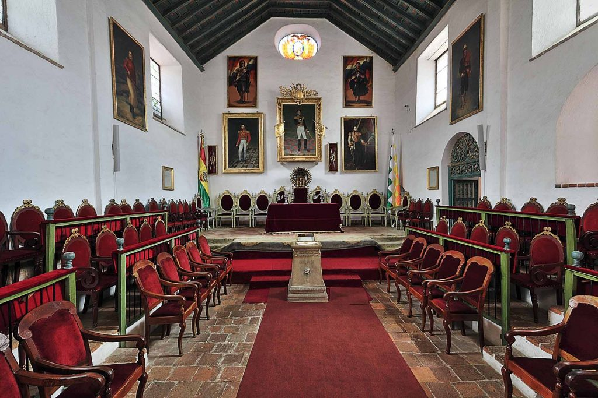
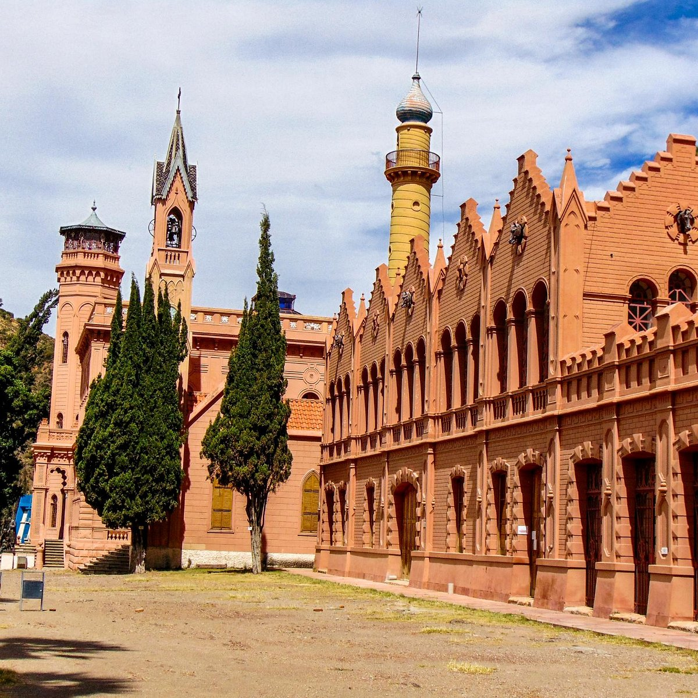

Potosí
Descubre la Villa Imperial con Trans Azul Bolivia.

TRANS AZUL BOLIVIA
POTOSÍ
Viaja a la ciudad más alta del mundo y conoce el legendario Cerro Rico.
Conoce Potosí
Potosí es una de las ciudades más emblemáticas de Bolivia, declarada Patrimonio de la Humanidad. Famosa por el Cerro Rico, su historia minera y su arquitectura colonial.
Lugares turísticos
Cerro Rico
El cerro más famoso de Bolivia, símbolo de la riqueza colonial y la minería de plata.

Casa de la Moneda
Museo histórico donde se acuñaba la moneda colonial, uno de los más importantes de Sudamérica.

Convento San Francisco
Convento colonial con impresionantes vistas de la ciudad y riqueza histórica.
Villa Imperial
Descubre Potosí, historia, altura y cultura en un destino único.
Información del destino
📍 Destino
Potosí, Bolivia - 4090 msnm
🏔 Clima
Frío y seco, característico del altiplano boliviano.
🍽 Gastronomía
Kalaphurka, ají de achacana y platos tradicionales potosinos.